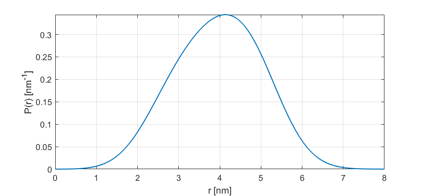

dd_rice4¶
Sum of four 3D-Rice distributions
Syntax¶
info = dd_rice4()
P = dd_rice4(r,param)
- Parameters
r- Distance axis (N-array)param- Model parameters
- Returns
P- Distance distribution (N-array)info- Model information (struct)
Model¶
where and is the modified Bessel function of the first kind with order . This is a three-dimensional non-central chi distribution, the 3D generalization of the 2D Rice distribution.
| Variable | Symbol | Default | Lower | Upper | Description |
|---|---|---|---|---|---|
param(1) |
2.5 | 1.0 | 20 | center, 1st component | |
param(2) |
0.7 | 0.1 | 5 | width, 1st component | |
param(3) |
0.25 | 0 | 1 | amplitude, 1st component | |
param(4) |
3.5 | 1.0 | 20 | center, 2nd component | |
param(5) |
0.7 | 0.1 | 5 | width, 2nd component | |
param(6) |
0.25 | 0 | 1 | amplitude, 2nd component | |
param(7) |
 |
4.5 | 1.0 | 20 | center, 3rd component |
param(8) |
0.7 | 0.1 | 5 | width. 3rd component | |
param(9) |
0.25 | 0 | 1 | amplitude, 3rd component | |
param(10) |
|
5.5 | 1.0 | 20 | center, 4th component |
param(11) |
0.7 | 0.1 | 5 | width. 4th component |
Example using default parameters:
{kind=link}
Description¶
info = dd_rice4()
Returns an info structure containing the specifics of the model:
info.model- Full name of the parametric model.info.nparam- Total number of adjustable parameters.info.parameters- Structure array with information on individual parameters.
P = dd_rice4(r,param)
Computes the distance distribution model P from the axis r according to the parameters array param. The required parameters can also be found in the info structure.